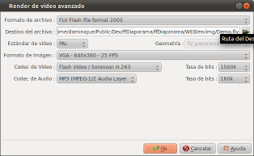

Introducción
Esta ventana tiene dos opciones diferentes, en función de si se ha seleccionado el botón
'tipo de dispositivo' o el botón 'Avanzado'.
Si hace click en un botón relacionado con 'tipo de dispositivo', la ventana de diálogo muestra dos zonas de selección:
Si hace click en un botón relacionado con 'tipo de dispositivo', la ventana de diálogo muestra dos zonas de selección:
- La primera zona permite elegir una categoría de dispositivo.
- La segunda zona permite elegir un modelo de dispositivo

Descripción de la ventana de diálogo en el modo avanzado
| Formato de archivo |
Seleccionar de la lista el tipo de archivo que será usado para generar el video. |
| Norma de Video |
Seleccionar la norma de video que se va a usar: PAL o NTSC. |
| Formato de imagen |
Seleccionar de la lista el formato de imagen que será usado para generar el video. |
| Codec de video |
Seleccionar de la lista el codec de audio que será usado para generar el video. |
| Compresión video |
Seleccionar de la lista la tasa de compresión de video usado para generar el video. |
| Codec de audio |
Seleccionar de la lista el codec de audio usado para generar el video. |
| Compresión audio | Seleccionar de la lista la tasa de compresión de audio usado para generar el video |
Generar la película
Una vez que se haya seleccionado el
dispositivo o configurados los parámetros avanzados,
hacer click en el botón OK, y se iniciará
el proceso de generación del video.
En cualquier momento durante este proceso, un click en el botón "Cancelar" detendrá el proceso.
Generalmente, para un video Full-HD 1080p :
Esta duración será mucho más corta en un video con resolución VGA. Es por eso que se recomienda llevar a cabo pruebas y centrarse en ensayos con baja resolución, para generar los videos en Full-HD en la fase final.
En cualquier momento durante este proceso, un click en el botón "Cancelar" detendrá el proceso.
Comentario :
Dependiendo del modelo del dispositivo o los parámetros avanzados que haya seleccionado, la generación puede tomar bastante tiempo.Generalmente, para un video Full-HD 1080p :
- En un PC con 4 núcleos veloces (Core i7, por ejemplo): El proceso tomará aproximadamente 2 minutos por cada minuto de video, para ser procesado
- En un PC con 2 núcleos (Core 2 Duo, por ejemplo): El proceso tomará aproximadamente 5 minutos por cada minuto de video, para ser procesado
Esta duración será mucho más corta en un video con resolución VGA. Es por eso que se recomienda llevar a cabo pruebas y centrarse en ensayos con baja resolución, para generar los videos en Full-HD en la fase final.
Consulta también
- Índice del WIKI de ffDiaporama
- Generar videos
- Normas de películas y resoluciones
- Contenedores de películas y codecs de video
© Proyecto ffDiaporama